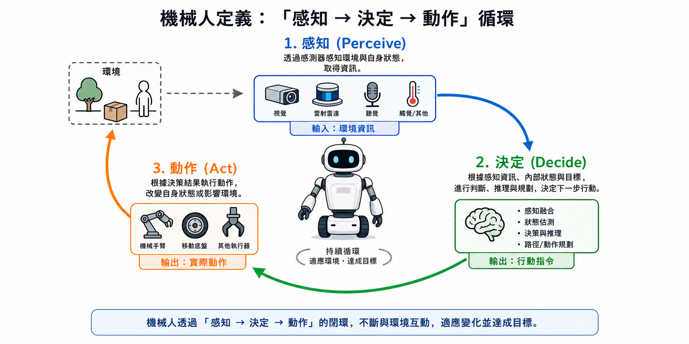
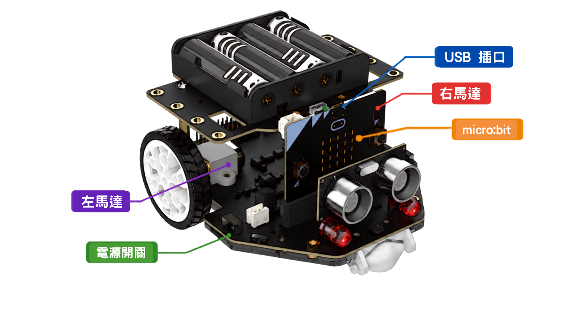
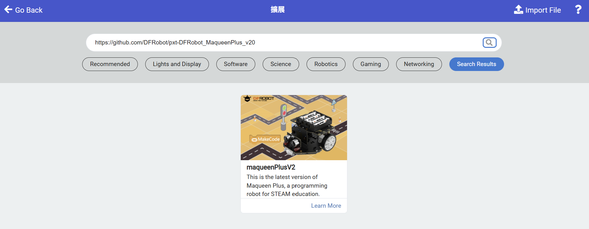
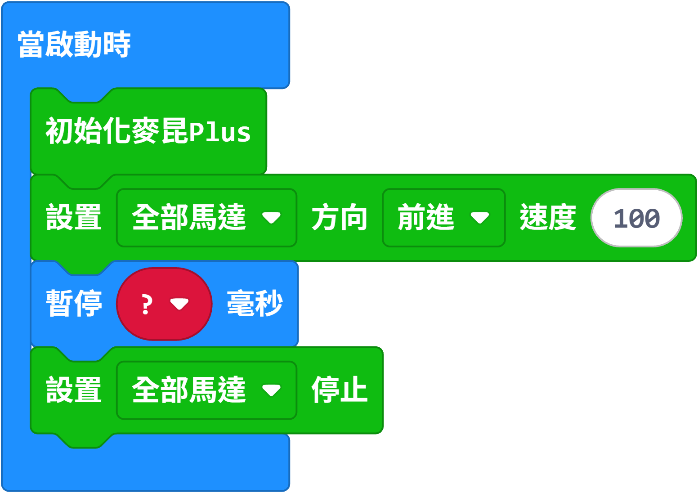
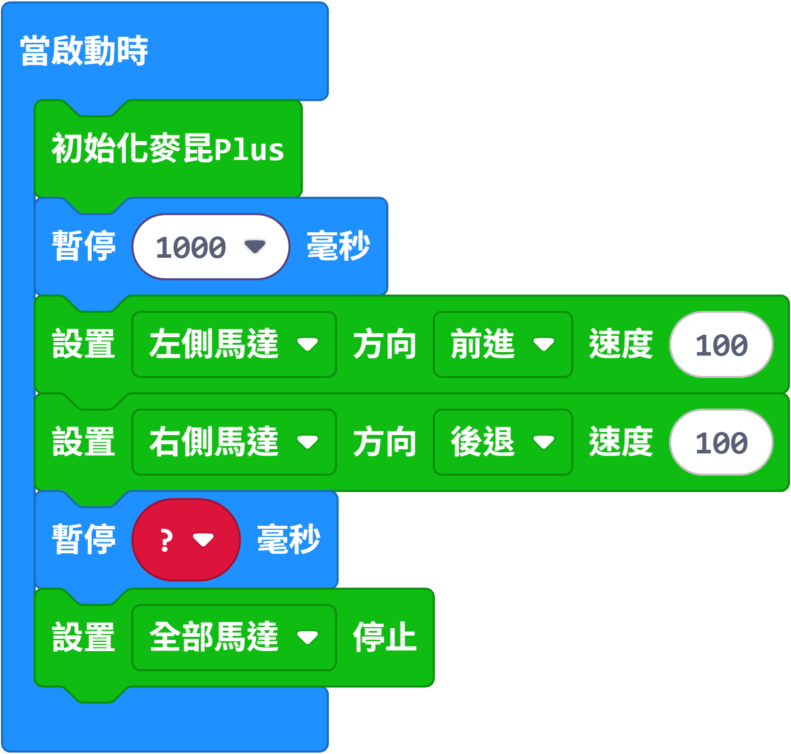
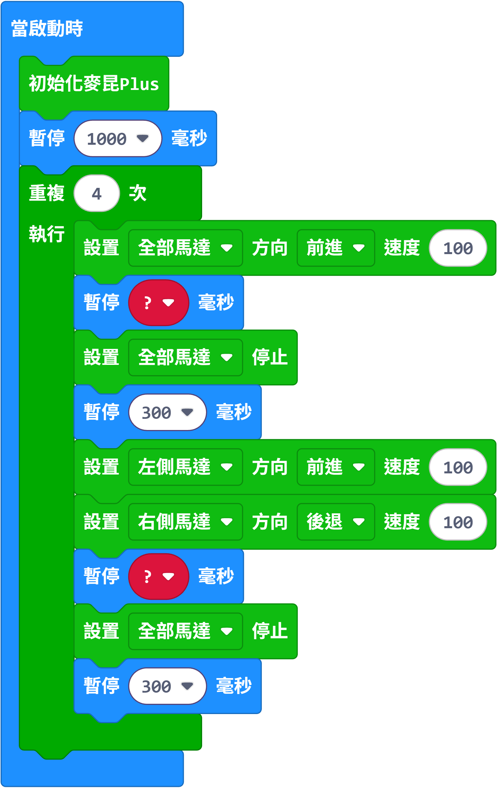

0學生資料（必填）
請先填寫以下資料，否則最後不能輸出功課檔案。你的答案會自動儲存在這部電腦的瀏覽器內。
📁 稍後 MakeCode 專案要用的名稱：班別_學號_square
客觀題以第一次作答為準，之後可以再試，是為了學習。
1什麼是機械人？5 分
機械人的定義
機械人通常是能夠感知環境，然後依照程式或控制作出決定，從而執行指定動作的系統。- 感知（Sense）——用感測器「知道」周圍發生什麼事
- 程式（Program）——事先寫好的一連串指令
- 決定（Decide）——根據感知到的資料選擇下一步做什麼
- 動作（Act）——真的動起來（移動、轉動、發聲、發光……）

圖 1：機械人的「感知 → 決定 → 動作」循環
🧩 練習 1：把英文定義重組（5 分）
下面是中文定義的 5 個部分（次序正確）。請對照它們，把打亂的英文詞組排成完整句子。
卡住的話，可按 💡 或直接按該句中文，會顯示對應英文（提示不扣分，但會記錄）。
你的答案：
可選英文詞組：
2機械人的例子：是？不是？9 分
用第 1 節的定義判斷以下 9 件物品。問自己兩條問題：「它會感知嗎？」「它會自己決定嗎？」
- 會動 ≠ 機械人。風扇只重複同一動作，不感知、不決定。
- 由人即時操控的遙控車和夾公仔機，「大腦」是人 → 屬人手操控機械。
- 不像人形也可以是機械人：升降機、自動門有感測器＋控制器＋馬達，是典型自動化系統。
- 高達模型外形最似機械人，卻完全沒有感測器和控制器——樣子不是重點，會不會感知和決定才是重點。
3配對：機械人的用途與功能5 分
為每部真正的機械人選出最合適的用途／功能。
| 機械人 | 用途／功能 | 結果 |
|---|
4影片：世界人形機械人運動會4 分
2026 年 8 月，第二屆世界人形機械人運動會在北京「冰絲帶」國家速滑館舉行，超過 2000 台機械人、666 支隊伍、51 個項目參賽。
🎬 影片一：搞笑片段剪輯（機械人也會「失手」）
邊看邊想：為什麼機械人「行路」這麼困難？它要感知什麼資料才能保持平衡？
🎬 影片二：最震撼的精彩瞬間
邊看邊想：這些動作背後，機械人要靠哪些感測器？哪些驅動器？
| 項目 | 成績 | 比較 |
|---|---|---|
| 100 米（天工 Tien Kung Ultra） | 約 9.3–9.4 秒 | 快過人類世界紀錄 9.58 秒 🤯 |
| 2025 年第一屆同項目最佳 | 21.50 秒 | 一年內進步超過一倍 |
但機械人衝線後仍常失去平衡撞向護墊——「跑得快」和「跑得穩」是兩回事。
✍️ 觀後討論（每題 2 分，需寫 15 字以上）
Q1 你認為機械人在運動會上比賽，對真實生活有什麼用？
Q2 如果人形機械人進入工廠、酒店、醫院或家庭，會帶來什麼好處和問題？
- 是最嚴苛的測試場：跑、跳、跌倒後起身，全部考驗平衡控制、感測反應和即時決策——這些正是將來救災、工廠、照顧長者所需的能力。
- 加快技術進步：公開比賽令各團隊互相比較和學習，一年之間 100 米由 21.5 秒進步到約 9.3 秒。
- 測試可靠度：比賽要連續運作，可測出電池續航、關節耐用度、跌倒保護等真實問題。
- 吸引投資與人才：更多人研發 → 零件成本下降 → 將來機械人更便宜、更普及。
- 公眾教育：讓大家看清機械人真實水平和限制，不會過度神化或過度恐懼。
| 好處 | 問題／隱憂 |
|---|---|
|
|
老師總結：科技本身沒有好壞，關鍵在於人怎樣設計和使用它——這就是設計與科技科要學的「設計思維」。
5機械人的運作方式：輸入 → 處理 → 輸出10 分
所有機械人（其實所有電子系統）都可以用這「三步曲」拆解：
👁️ ① 輸入 Input
用感測器（Sensor）收集環境資料
- 超聲波／矩陣激光測距
- 循線感測器
- 按鈕／開關
- 攝影機、麥克風
🧠 ② 處理 Process
用控制器（Controller）依程式作決定
- micro:bit 微控制器
- 你寫的程式
- 例：「若距離 < 10cm 就轉彎」
⚙️ ③ 輸出 Output
用驅動器（Actuator）做出動作
- 馬達 + 車輪
- 伺服馬達
- LED、蜂鳴器
🔍 部件圖鑑（按「翻開」看它屬於哪一階段）
例子一：自動掃地機械人
| 階段 | 部件 | 做什麼 |
|---|---|---|
| 輸入 | 紅外線／碰撞感測器、防跌感測器、塵埃感測器 | 偵測前方有牆、有樓梯、地面很污 |
| 處理 | 內部晶片 + 程式 | 決定：轉左？後退？加大吸力？ |
| 輸出 | 車輪馬達、吸塵馬達、掃刷、提示聲 | 轉向避開障礙物，同時吸塵 |
例子二：自動門
| 階段 | 部件與工作 |
|---|---|
| 輸入 | 紅外線／微波感測器偵測有人接近 |
| 處理 | 控制電路：有人 → 開門；5 秒無人 → 關門 |
| 輸出 | 電動馬達拉動門扇 |
🧩 練習 3：這個部件屬於哪一階段？（每題 1 分，共 10 分）
6實作任務：令麥昆小車走一個正方形12 分
- 用 MakeCode 積木式編程，令麥昆 Plus 小車沿一格地磚走出一個正方形。
- 起點與終點大致相同，車頭方向回到原方向（共轉 4 次 90°）。
- 用 「當啟動時」：開電源（或按 micro:bit 背面 reset 鍵）就開始行走。
器材清單
- 麥昆 Plus 小車 × 1、micro:bit × 1、USB 線 × 1、電池 × 1 組
- 電腦（Chrome／Edge）、間尺或軟尺、粉筆或紙膠帶

圖 3：麥昆 Plus 小車各部分
1開啟編程平台，建立新專案
- 用 Chrome 開啟
makecode.microbit.org - 按 「新專案 New Project」
- 專案名稱：班別_學號_square（例如
1A_12_square）
2加入麥昆 Plus 擴展
小車的馬達積木不是內建的，要先加擴展：
- 在中間的指令群（積木清單）按最下面的 「擴展 Extensions」
- 把以下連結整條貼上搜尋欄，然後按 Enter：
https://github.com/DFRobot/pxt-DFRobot_MaqueenPlus_v20 - 在結果中選擇 maqueenPlusV2
- 成功後，指令群會多出 3 組積木：IR、矩陣激光測距、麥昆Plus V2&V3

圖 4：加入 maqueenPlusV2 擴展
3認識今次要用的積木
| 積木 | 在哪個指令群 | 作用 |
|---|---|---|
| 當啟動時 | 基本 Basic | 開機／重設後執行一次，程式由這裡開始 |
| 重複無限次 | 基本 Basic | 裡面的指令不停重複（今次正方形不放在這裡） |
| 暫停 (ms) 100 | 基本 Basic | 維持上一個動作多少毫秒（1000ms = 1 秒） |
| 重複 4 次 執行 | 迴圈 Loops | 同一組動作做 4 次（正方形有 4 條邊） |
| 初始化麥昆PLUS | 麥昆Plus V2&V3 | 每個程式開頭必須加，令 micro:bit 與小車連接 |
| 設置 [全部馬達] 方向 [前進] 速度 [100] | 麥昆Plus V2&V3 | 控制左／右／全部馬達的方向與速度（0–255） |
| 設置 [全部馬達] 停止 | 麥昆Plus V2&V3 | 停車 |
4第一步實驗：走直線，量速度（3 分）
// 測試程式 A：前進 2 秒 當啟動時 初始化麥昆PLUS 設置 [全部馬達] 方向 [前進] 速度 [100] 暫停 (ms) 2000 設置 [全部馬達] 停止

- 用粉筆／紙膠帶標出起點（對準車頭）
- 下載程式（步驟 7），拔 USB，開電源 → 小車立即起步
- 量出小車走了多少 cm
- 量一格地磚邊長（多數約 60cm，要自己量！）
- 用下面計算器算出「走一格地磚要幾多毫秒」
公式：速度 = 距離 ÷ 時間；所需時間 = 地磚邊長 ÷ 速度 × 1000（毫秒）
5第二步實驗：轉 90°（原地轉彎）（3 分）
要原地轉，就要左側馬達前進、右側馬達後退（差速轉向 Differential steering）：
// 測試程式 B：原地向右轉 當啟動時 初始化麥昆PLUS 暫停 (ms) 1000 ← 給自己時間放好小車、離手 設置 [左側馬達] 方向 [前進] 速度 [100] 設置 [右側馬達] 方向 [後退] 速度 [100] 暫停 (ms) 500 ← 這個數字要慢慢試！ 設置 [全部馬達] 停止
圖 7：測試程式 B ─ 原地轉彎測試（🔍 按圖可放大看清楚）
轉 90° 需要幾多毫秒沒有標準答案（受電池電量、地板、車輪影響），要靠試驗與修正（Trial and Error）。
做法：填入你用的暫停時間和實際轉了多少度，再選擇太多／太少並填上預計要調整幾多毫秒，
最後一欄會自動算出下次應該試的數字。第一行是示範例子，請在空白格直接輸入，至少記錄 2 次試驗。
| 次數 | 暫停時間 (ms) | 實際轉了多少度 | 轉得太多／太少？ | 預計調整 (ms) | 下次試（自動計算） | 刪除 |
|---|---|---|---|---|---|---|
| 例 | 500 | 約 70° | 太少（未夠 90°） | ＋50 | 下次試 550 ms | |
| 1 | — | |||||
| 2 | — | |||||
| 3 | — |
6組合成完整程式
正方形 =（直行一邊 + 轉 90°）× 4，所以用「重複 4 次」：
// 完整程式：走正方形 當啟動時 初始化麥昆PLUS 暫停 (ms) 1000 // 放好小車、離手 重複 4 次 執行 // —— 直行一邊 —— 設置 [全部馬達] 方向 [前進] 速度 [100] 暫停 (ms) 3000 ← 用步驟 4 算出的數字 設置 [全部馬達] 停止 暫停 (ms) 300 // 停穩少少，轉彎更準 // —— 原地轉 90° —— 設置 [左側馬達] 方向 [前進] 速度 [100] 設置 [右側馬達] 方向 [後退] 速度 [100] 暫停 (ms) 500 ← 用步驟 5 試出的數字 設置 [全部馬達] 停止 暫停 (ms) 300 // 迴圈結束，小車回到起點
圖 7：完整積木程式 ─ 走完整個正方形（🔍 按圖可放大看清楚）
7下載程式到 micro:bit
- USB 線接電腦
- 按左下角 「下載 Download」
- 把
.hex拖到 MICROBIT 磁碟機（或先「配對裝置」，之後一鍵燒錄） - 黃燈閃完＝完成
- 拔掉 USB → micro:bit 插上小車（LED 面向前）→ 把車放在地磚一角，車頭對正磚縫
- 開電源，小車在 1 秒後起步；想重試按 micro:bit 背面 reset 鍵
8除錯（Debugging）
| 現象 | 可能原因 | 解決方法 |
|---|---|---|
| 完全不動 | 電源未開／電池弱／micro:bit 未插好 | 開電源、換電池、重新插好 |
| 程式明明下載了卻沒反應 | 忘記加「初始化麥昆PLUS」 | 在「當啟動時」第一行加上它 |
| 只有一邊輪轉 | 用了「左側馬達」或「右側馬達」而非「全部馬達」 | 直行要選 全部馬達 |
| 一直向前不停 | 忘記「暫停」或「停止」 | 每個動作後補上暫停 + 停止 |
| 邊長太長／太短 | 直行時間不準 | 修改步驟 4 算出的毫秒數 |
| 走成菱形（不是正方形） | 轉彎時間不準 | 逐次加減 50ms 微調 |
| 越走越歪 | 左右馬達力度不同、電池弱 | 快的一邊速度調低（100→95）或換電池 |
| 地板打滑 | 速度太快 | 速度由 100 降至 80 |
9自我檢查表（每項 1 分，共 6 分）
🎬 示範影片（可選）
🚀 挑戰任務（做得快的同學，不計分）
- 三角形挑戰：改成走正三角形。轉彎角度要多少度？「重複」次數改成幾？
- 變數挑戰：建立變數
邊長時間和轉彎時間，之後只改一個數值就能調整整個程式。 - 雙倍挑戰：走 2×2 格地磚的大正方形，只准改動一個數字。
- 提示挑戰：每轉完一個角，就在 LED 顯示數字（1、2、3、4）或播放一下音效。
- 反方向挑戰：走完正方形後，沿相反方向再走一次回到起點。
✓本課總結・重要詞彙
- 機械人 = 能感知環境 → 依程式作決定 → 執行動作的系統。
- 會動的不一定是機械人（風扇、遙控車、夾公仔機）；不像人形的也可以是（升降機、自動門）。
- 任何機械人都可拆解為 輸入（感測器）→ 處理（控制器＋程式）→ 輸出（驅動器）。
- 編程需要量度、計算、試驗、除錯——這正是設計與科技的核心技能。
| 中文 | English | 中文 | English |
|---|---|---|---|
| 機械人 | Robot | 自動化 | Automation |
| 感測器 | Sensor | 驅動器 | Actuator |
| 輸入／處理／輸出 | Input / Process / Output | 微控制器 | Microcontroller |
| 程式 | Program | 迴圈 | Loop |
| 除錯 | Debugging | 人形機械人 | Humanoid robot |
交成績單與輸出功課
DT_L1_1A_12_陳大文.html → ④ 連同 MakeCode 專案分享連結，一併上傳到 eClass／Google Classroom。